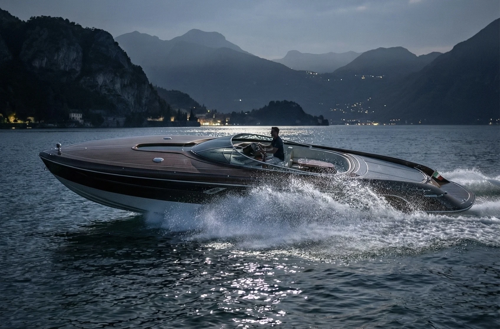
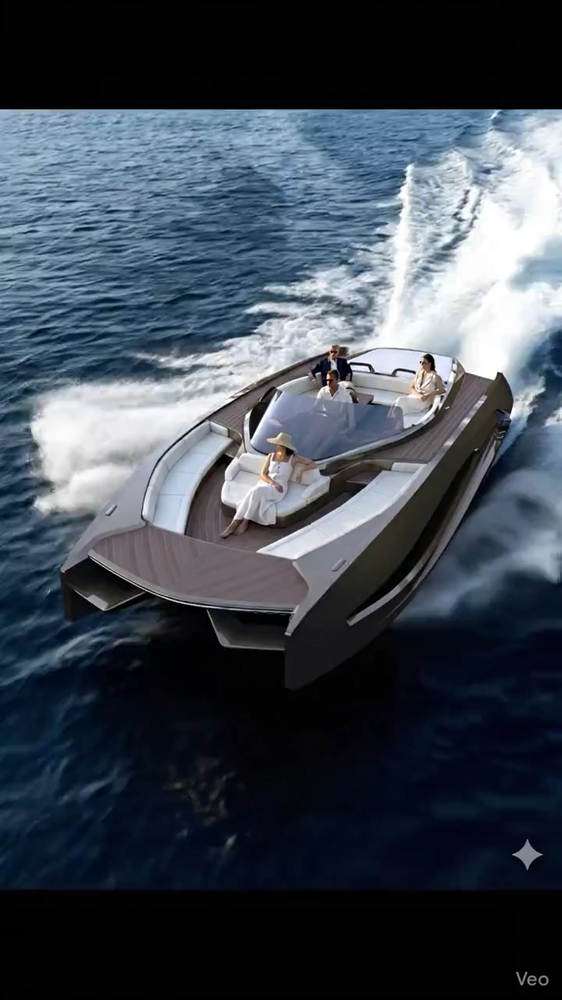
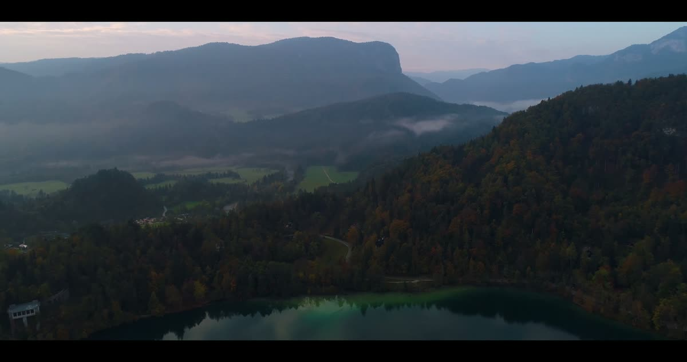
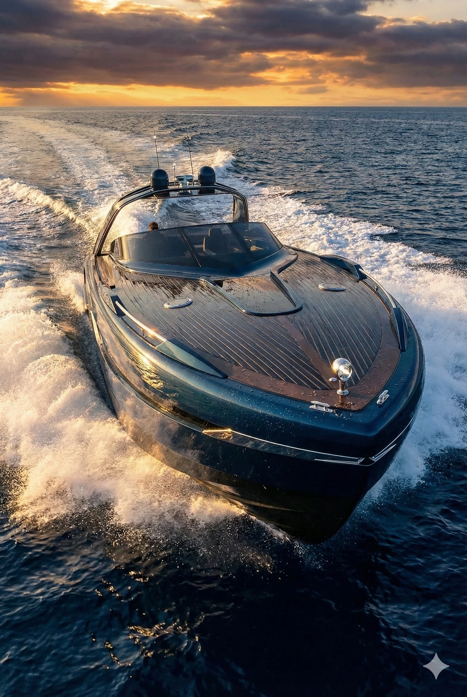

VELLARIO · COMO / Stile Italiano
THE ART OF DOLCEVITA
COMO
A distinctly Italian expression of design, elegance and the pleasure of life on the water.
VELLARIO · COMO / 01
La Collezione
Eight boats, eight distinct characters. Different expressions of life on the water.
Distinctive by Design
Otto barche, otto caratteri. Un'unica interpretazione della Dolce Vita sull’acqua.
ESPLORA La CollezioneLEGGI TUTTO
A collection should never feel like a row of interchangeable objects. Quantum 999, MAS 36, MAS 52, MAS 56, Lariocab, FY70, GranTender 72 and Gran Marlin explore different expressions of life on the water, from the spirit of the Italian sporting boat to the architectural ambition of a larger yacht. Each begins with its own design character.

LA COLLEZIONE 01 / 08Quantum 999Una Linea. Un Carattere. LA COLLEZIONE 02 / 08MAS 36Lo Spirito del Gran Turismo.
LA COLLEZIONE 02 / 08MAS 36Lo Spirito del Gran Turismo. LA COLLEZIONE 03 / 08MAS 52Eleganza in Movimento.
LA COLLEZIONE 03 / 08MAS 52Eleganza in Movimento. LA COLLEZIONE 04 / 08MAS 56La Forza dell'Equilibrio.LA COLLEZIONE 05 / 08LariocabL'Essenza del Lago.
LA COLLEZIONE 04 / 08MAS 56La Forza dell'Equilibrio.LA COLLEZIONE 05 / 08LariocabL'Essenza del Lago. LA COLLEZIONE 06 / 08FY70Lo Stile Senza Compromessi.
LA COLLEZIONE 06 / 08FY70Lo Stile Senza Compromessi. LA COLLEZIONE 07 / 08GranTender 72Presenza. Movimento. Libertà.
LA COLLEZIONE 07 / 08GranTender 72Presenza. Movimento. Libertà. LA COLLEZIONE 08 / 08Gran MarlinL'Anima del Mare Aperto.
LA COLLEZIONE 08 / 08Gran MarlinL'Anima del Mare Aperto.VELLARIO · COMO / 02
Dove Tutto Comincia
Lake Como: architecture, landscape and a tradition of elegance on the water.
Where It All Begins
Como è il nostro punto di partenza: paesaggio, architettura e una tradizione di eleganza sull’acqua.
ESPLORA ComoLEGGI TUTTO
There are places whose character is inseparable from the way they are lived. Lake Como is one of them: architecture set against the mountains, gardens descending towards the water, and a distinctive tradition of arriving by boat. For VELLARIO, Como is not merely a location or a backdrop. It is the cultural inspiration for a new nautical point of view.

VELLARIO · COMO / 03
La Dolce Vita sull'Acqua
An aperitivo by the lake, golden light at sunset, and the pleasure of travelling without hurry.
The Good Life, the Italian Way
Un aperitivo sul lago, la luce del tramonto, il piacere di navigare senza fretta. Questa è la Dolce Vita.
ESPLORA La Dolce VitaLEGGI TUTTO
An aperitivo at the water's edge. The golden light of late afternoon. A short passage across the lake, with no need to hurry. La Dolce Vita is not a style borrowed for a photograph; it is the pleasure of living beautifully, simply and without ostentation. This is the spirit we want VELLARIO to express.

VELLARIO · COMO / 04
Storia & Tradizione
Generations of boatbuilders, racers and craftsmen shaped the nautical culture of Lake Como.
Long before the idea of VELLARIO, generations of boatbuilders, racers and craftsmen shaped the nautical culture of Lake Como. Their world was one of working boats and elegant runabouts, ingenuity and competition, skilled hands and bold ideas. It remains a source of inspiration for a new expression of Italian nautical elegance.
ESPLORA Storia & TradizioneVELLARIO · COMO / 05
L'Arte del Dettaglio
Proportion, materials and the beauty of every detail. The Italian art of saper fare.
The Beauty of Every Detail
Proporzioni, materiali, linee e superfici: il saper fare italiano si riconosce nei dettagli.
ESPLORA Design & Saper FareLEGGI TUTTO
The Italian idea of saper fare is more than craftsmanship alone. It is the discipline of knowing why a detail matters. Proportion, materials, the line of a hull and the feeling of a surface should belong to one coherent whole. For VELLARIO, beauty starts with these decisions.
VELLARIO · COMO / 06
La Casa VELLARIO
A new Italian nautical design house, distinctive in character and discreet in expression.
A Distinctly Italian Point of View
La Casa VELLARIO is conceived as a new Italian nautical design house: distinctive in character, discreet in expression, personal in its approach. The ambition is to direct the design, identity and future client experience of a carefully considered collection—not to pursue volume or spectacle.
ESPLORA La Casa VELLARIOVELLARIO · COMO / 07
Un Invito Personale
A personal relationship guided by taste, design and a shared appreciation of beauty.
The Personal Touch
A boat becomes personal through thoughtful choices, not endless options. Su Misura is the Italian expression of this attention to the individual. The future VELLARIO relationship with its owners is envisaged as a conversation guided by taste, design and a shared appreciation of beauty.
ESPLORA ContattiTHE ART OF DOLCEVITA
La forma
del desiderio.
A private world shaped by Italian sensibility. Nothing ordinary, nothing unnecessary.
IL LAGO, LA TRADIZIONE
Un lago.
Un'eredità.
La tradizione non è ripetere il passato. È saperne riconoscere l'eleganza.
ART DIRECTION
Forme d'acqua.
Original design studies, carefully framed. Una galleria dal linguaggio più vicino all'arte che a un catalogo.
Two worlds.
One emotion.
La linea del design incontra l’atmosfera del lago. La transizione non interrompe il film: lo trasforma.
A window
into the lake.
Il film emerge da una piccola apertura e conquista tutto lo schermo.


A story written
on water.
Fotografie e film che cambiano capitolo seguendo lo scroll.